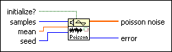

Poisson Noise VI
Owning Palette: Signal Generation VIs
Requires: Full Development System
Generates a pseudorandom sequence of values that are the number of discrete events that occur in a given interval, specified by mean, of a unit rate Poisson process.

 Add to the block diagram Add to the block diagram |
 Find on the palette Find on the palette |


 is the mean.
is the mean. , of the pseudorandom sequence:
, of the pseudorandom sequence: